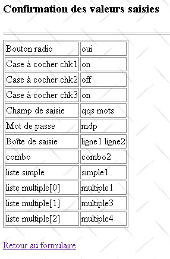
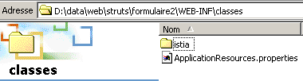

6. Formulários HTML
Até agora, utilizámos um único formulário que incluía apenas dois campos de introdução de dados. Propomos aqui criar e processar um formulário utilizando os componentes gráficos habituais (botões de opção, caixas de seleção, campos de introdução de dados, caixas de seleção suspensa, listas).
6.1. As vistas da aplicação
A aplicação terá apenas duas vistas. A primeira apresenta um formulário em branco:
QZXW2HTMLP000547ZQX 1 - formulaire

Esta primeira vista, denominada formulaire.jsp, permitir-nos-á implementar diferentes tags da biblioteca struts-html. O utilizador preenche o formulário:

O botão [Envoyer] permite obter uma confirmação dos valores introduzidos. Esta será a segunda vista:

Esta segunda vista permite-nos utilizar outras duas bibliotecas de tags: struts-bean e struts-logic. O link [Retour au formulaire] permite-nos aceder ao formulário tal como foi preenchido. Voltamos então à primeira vista.
6.2. A arquitetura da aplicação
 |
- O formulário (vista 1) será representado por um objeto Struts dinâmico denominado dynaFormulaire, de tipo derivado de DynaActionForm. Será apresentado pela vista formulaire.jsp.
- A ação Struts InitFormulaireAction terá como objetivo recolher os dados necessários para a exibição do formulário
- o formulário preenchido será processado por uma ação ForwardAction, que se limitará a redirecionar o pedido para a segunda vista confirmation.jsp. Esta encarregar-se-á de apresentar os valores do formulário.
6.3. A configuração da aplicação
6.3.1. O ficheiro server.xml
O contexto da aplicação será denominado /formulário2. Por isso, adicionaremos a seguinte linha no ficheiro server.xml do Tomcat:
Feito isto, reiniciamos o Tomcat, se necessário, para que este tenha em conta o novo contexto. Podemos verificar a validade do mesmo acedendo ao URL http://localhost:8080/formulaire2:

6.3.2. O ficheiro web.xml
O ficheiro de configuração web.xml da aplicação será o seguinte:
<?xml version="1.0" encoding="ISO-8859-1"?>
<!DOCTYPE web-app
PUBLIC "-//Sun Microsystems, Inc.//DTD Web Application 2.3//EN"
"http://java.sun.com/dtd/web-app_2_3.dtd">
<web-app>
<servlet>
<servlet-name>action</servlet-name>
<servlet-class>org.apache.struts.action.ActionServlet</servlet-class>
<init-param>
<param-name>config</param-name>
<param-value>/WEB-INF/struts-config.xml</param-value>
</init-param>
</servlet>
<servlet-mapping>
<servlet-name>action</servlet-name>
<url-pattern>*.do</url-pattern>
</servlet-mapping>
<taglib>
<taglib-uri>/WEB-INF/struts-html.tld</taglib-uri>
<taglib-location>/WEB-INF/struts-html.tld</taglib-location>
</taglib>
<taglib>
<taglib-uri>/WEB-INF/struts-bean.tld</taglib-uri>
<taglib-location>/WEB-INF/struts-bean.tld</taglib-location>
</taglib>
<taglib>
<taglib-uri>/WEB-INF/struts-logic.tld</taglib-uri>
<taglib-location>/WEB-INF/struts-logic.tld</taglib-location>
</taglib>
</web-app>
No que diz respeito aos ficheiros de configuração web.xml já mencionados, introduzimos algumas alterações:
- introduzimos duas novas bibliotecas de tags: struts-bean e struts-logic. Estas serão utilizadas na vista confirmation.jsp. A vista formulaire.jsp, por sua vez, utilizará a biblioteca struts-html.
6.3.3. O ficheiro struts-config.xml
O ficheiro struts-config.xml terá o seguinte conteúdo:
<?xml version="1.0" encoding="ISO-8859-1" ?>
<!DOCTYPE struts-config PUBLIC
"-//Apache Software Foundation//DTD Struts Configuration 1.1//EN"
"http://jakarta.apache.org/struts/dtds/struts-config_1_1.dtd">
<struts-config>
<form-beans>
<form-bean name="dynaFormulaire" type="istia.st.struts.formulaire.DynaFormulaire">
<form-property name="opt" type="java.lang.String" initial="non"/>
<form-property name="chk1" type="java.lang.String"/>
<form-property name="chk2" type="java.lang.String"/>
<form-property name="chk3" type="java.lang.String"/>
<form-property name="champSaisie" type="java.lang.String" initial=""/>
<form-property name="mdp" type="java.lang.String" initial=""/>
<form-property name="boiteSaisie" type="java.lang.String" initial=""/>
<form-property name="combo" type="java.lang.String"/>
<form-property name="listeSimple" type="java.lang.String"/>
<form-property name="listeMultiple" type="java.lang.String[]"/>
<form-property name="secret" type="java.lang.String" initial="xxx"/>
<form-property name="valeursCombo" type="java.lang.String[]" />
<form-property name="valeursListeSimple" type="java.lang.String[]" />
<form-property name="valeursListeMultiple" type="java.lang.String[]"/>
</form-bean>
</form-beans>
<action-mappings>
<action
path="/confirmation"
name="dynaFormulaire"
validate="false"
scope="session"
parameter="/vues/confirmation.jsp"
type="org.apache.struts.actions.ForwardAction"
/>
<action
path="/init"
name="dynaFormulaire"
validate="false"
scope="session"
type="istia.st.struts.formulaire.InitFormulaireAction"
>
<forward name="afficherFormulaire" path="/vues/formulaire.jsp"/>
</action>
<action
path="/affiche"
parameter="/vues/formulaire.jsp"
type="org.apache.struts.actions.ForwardAction"
/>
</action-mappings>
<message-resources
parameter="ApplicationResources"
null="false"/>
</struts-config>
Aqui encontram-se as três grandes secções:
- a declaração dos formulários na secção <form-beans>
- a declaração das ações na secção <action-mappings>
- a declaração do ficheiro de recursos na secção <message-ressources>
6.3.4. Os objetos (beans) de formulário da aplicação
Os objetos utilizados para representar os formulários HTML da aplicação são objetos do tipo ActionForm ou derivados (DynaActionForm, DynaValidatorForm, ...). Chamam-se «beans» porque a sua construção segue as regras dos JavaBeans. Existe apenas um «bean» de formulário na nossa aplicação, denominado dynaFormulaire e de tipo derivado de DynaActionForm. Será utilizado nas seguintes situações:
- conter os dados necessários para a exibição da vista n.º 1
- recuperar os valores do formulário da vista n.º 1 quando o utilizador o validar (submit)
- conter os dados necessários para a exibição da vista n.º 2
A estrutura do bean dynaFormulaire está intimamente ligada ao formulário da vista n.º 1. Vamos analisá-lo:
 |
N.º | Tipo HTML | Função |
<input name="opt" type="radio" value="sim"> <input name="opt" type="radio" value="não"> | grupo de botões de opção interligados (mesmo nome) | |
<input name="chk1" type="radio" value="on"> <input name="chk2" type="radio" value="on"> <input name="chk3" type="radio" value="on"> | grupos de caixas de seleção independentes (não têm o mesmo nome) | |
<input type="text" name="champSaisie" > | um campo de introdução | |
<input type="password" name="mdp" > | um campo de palavra-passe | |
<textarea name="boiteSaisie">...</textarea> | um campo de introdução de texto com várias linhas | |
<select name="combo" size="1">..</select> | um menu suspenso | |
<select name="listeSimple" size="3">..</select> | uma lista de seleção única | |
<select name="listeMultiple" size="3" multiple>..</select> | uma lista de seleção múltipla | |
<input type="button" value="Apagar" onclick='effacerListe("listeSimple")'> | botão que permite desmarcar os elementos selecionados em listeSimple (7) | |
<input type="button" value="Apagar" onclick='effacerListe("listeMultiple")'> | botão que permite desmarcar os elementos selecionados em listeMultiple (8) | |
<input type="submit" value="Enviar"> | botão de envio do formulário | |
<input type="hidden" name="secret" value="..."> | um campo oculto |
Distinguamos vários casos:
- o objeto dynaFormulaire é utilizado para conter os valores do formulário HTML acima, que será enviado através do botão [Envoyer]. Por isso, tem de ter os mesmos campos que o formulário HTML. O tipo do campo é definido pela seguinte regra:
- se o campo HTML fornecer apenas um valor, então o campo de dynaFormulaire será do tipo java.lang.String
- se o campo HTML fornecer vários valores, então o campo de dynaFormulaire será do tipo java.lang.String[]
No formulário HTML acima, apenas o campo listeMultiple pode estar associado a vários valores (os selecionados pelo utilizador). Assim, uma primeira definição do objeto dynaFormulaire seria a seguinte:
<form-bean name="dynaFormulaire" type="istia.st.struts.formulaire.DynaFormulaire">
<form-property name="opt" type="java.lang.String" initial="non"/>
<form-property name="chk1" type="java.lang.String"/>
<form-property name="chk2" type="java.lang.String"/>
<form-property name="chk3" type="java.lang.String"/>
<form-property name="champSaisie" type="java.lang.String" initial=""/>
<form-property name="mdp" type="java.lang.String" initial=""/>
<form-property name="boiteSaisie" type="java.lang.String" initial=""/>
<form-property name="combo" type="java.lang.String"/>
<form-property name="listeSimple" type="java.lang.String"/>
<form-property name="listeMultiple" type="java.lang.String[]"/>
<form-property name="secret" type="java.lang.String" initial="xxx"/>
</form-bean>
Como será preenchido o dynaFormulaire com os valores do formulário HTML enviados pelo cliente web?
O campo «opt» receberá o valor «sim» se o campo HTML <input type="radio" name="opt" value="sim"> tiver sido selecionado, e o valor «não» se tiver sido selecionado o campo <input type="radio" name="opt" value="não">. | |
o campo chk1 receberá o valor «on» se o campo HTML <input name="chk1" type="radio" value="1"> tiver sido marcado; caso contrário, não receberá nenhum valor. Neste último caso, o campo chk1 manterá o seu valor anterior. | |
idem | |
idem | |
O campo champSaisie receberá o texto introduzido pelo utilizador no campo HTML <input type="text" name="champSaisie">. Este texto pode, eventualmente, ser uma cadeia vazia. | |
O campo «mdp» receberá o texto introduzido pelo utilizador no campo HTML <input type="password" name="mdp">. Este texto pode, eventualmente, ser uma cadeia vazia. | |
O campo boiteSaisie receberá o texto introduzido pelo utilizador no campo HTML <textarea name="boiteSaisie">...</textarea>. Este texto constitui uma única cadeia de caracteres, formada pelas linhas digitadas pelo utilizador, separadas umas das outras pela sequência de caracteres «\r\n». O texto obtido pode, eventualmente, ser uma cadeia vazia. | |
o campo de lista suspensa receberá a opção selecionada pelo utilizador no campo HTML <select name="combo" size="1">..</select>. A opção selecionada é aquela que aparece na lista suspensa. Se a opção HTML selecionada for do tipo <option value="XX">YY</option>, o campo de lista suspensa receberá o valor «XX». Se a opção HTML selecionada for do tipo <option>YY</option>, o campo de lista suspensa receberá o valor "YY". | |
o campo listeSimple receberá a opção selecionada pelo utilizador no campo HTML <select name="listeSimple" size="..">..</select> caso exista alguma. Se não houver nenhuma, o campo listeSimple não receberá qualquer valor e manterá o seu valor anterior. O valor efetivamente atribuído ao campo listeSimple segue as regras indicadas para o menu suspenso. | |
o campo listeMultiple, do tipo String[], receberá as opções selecionadas pelo utilizador no campo HTML <select name="listeMultiple" size=".." multiple>..</select> caso existam. Se não houver nenhuma, a matriz listeMultiple não receberá nenhum valor e o seu conteúdo permanecerá inalterado. Os valores efetivamente atribuídos à matriz listeMultiple seguem as regras indicadas para o menu suspenso. | |
o campo «secret» receberá o valor XX do campo HTML <input type="hidden" name="secret" value="XX">. Este texto pode, eventualmente, ser a cadeia vazia. |
- O objeto dynaFormulaire é utilizado para definir o conteúdo inicial da vista n.º 1. Os valores dos campos anteriores serão utilizados para os seguintes fins:
deve ter o valor «sim» ou «não» para que o navegador saiba qual o botão de opção a selecionar | |
se chk1 tiver o valor «on», a caixa de seleção será marcada; caso contrário, não será | |
idem | |
idem | |
o valor do campo será apresentado na área de introdução de dados champSaisie | |
o valor do campo será apresentado na área de introdução de dados mdp | |
o valor do campo será apresentado na área de introdução de dados boiteSaisie | |
o valor deste campo indica qual o elemento da lista suspensa que deve ser selecionado quando o formulário for apresentado | |
idem | |
os valores da tabela listeMultiple indicam quais os elementos da lista múltipla que devem ser selecionados quando o formulário for apresentado | |
o valor do campo será atribuído ao atributo «value» do campo «secret» HTML. |
A vista n.º 1 necessita de mais informações:
- a lista de valores a apresentar na lista suspensa
- a lista de valores a apresentar na lista listeSimple
- a lista de valores a apresentar na lista listeMultiple
Existem várias formas de fornecer estas informações à vista. Por exemplo, poderiam servir tabelas incluídas na consulta passada à vista. Neste caso, colocamos essas tabelas no bean dynaFormulaire:
<form-bean name="dynaFormulaire" type="istia.st.struts.formulaire.DynaFormulaire">
...
<form-property name="valeursCombo" type="java.lang.String[]" />
<form-property name="valeursListeSimple" type="java.lang.String[]" />
<form-property name="valeursListeMultiple" type="java.lang.String[]"/>
</form-bean>
O formulário dynaFormulaire será inicializado pela ação /init, que chamará um objeto derivado de Action denominado InitFormulaireAction. É este objeto que se encarregará de criar as três tabelas necessárias para a exibição das três listas e de as colocar no bean dynaFormulaire. O ficheiro de configuração atribui a este bean um âmbito igual ao da sessão. Isto significa que o controlador Struts colocará este bean na sessão. Assim, não será necessário regenerá-lo entre dois ciclos de pedido-resposta. Por conseguinte, a ação /init só será chamada uma vez.
- O objeto dynaFormulaire também é utilizado para fornecer o conteúdo da vista n.º 2. Esta limita-se a apresentar os valores do mesmo.
6.3.5. As ações da aplicação
As ações são executadas por objetos do tipo Action ou derivados. A configuração das ações é feita dentro das balizas <action-mappings>:
<action-mappings>
<action
path="/confirmation"
name="dynaFormulaire"
validate="false"
scope="session"
parameter="/vues/confirmation.jsp"
type="org.apache.struts.actions.ForwardAction"
/>
<action
path="/init"
name="dynaFormulaire"
validate="false"
scope="session"
type="istia.st.struts.formulaire.InitFormulaireAction"
>
<forward name="afficherFormulaire" path="/vues/formulaire.jsp"/>
</action>
<action
path="/affiche"
parameter="/vues/formulaire.jsp"
type="org.apache.struts.actions.ForwardAction"
/>
</action-mappings>
Note-se que nem sempre existe um formulário associado a uma ação. É o caso, acima, da ação /affiche. Antes de detalhar cada ação, recordemos o funcionamento do par ação-formulário associado no interior de uma baliza <action>:
- uma ação começa com um pedido de um cliente web e termina com o envio de uma página de resposta. Trata-se do ciclo pedido-resposta do cliente-servidor web. O pedido é recebido pelo controlador Struts do tipo ActionServlet ou derivado. É também este controlador que envia a resposta.
- O bean do formulário do tipo ActionForm ou derivado é criado, caso ainda não exista. O controlador verifica se consegue encontrar um objeto com o nome «name» no âmbito indicado por «scope». Se sim, utiliza-o. Se não, cria-o e coloca-o no âmbito indicado por «scope», associado ao atributo indicado por «name».
No exemplo da ação /init, por exemplo, o controlador executará um request.getSession().getAttribute("dynaFormulaire") para verificar se o dynaFormulaire já foi criado ou não. Se não for o caso, irá criá-lo e colocá-lo na sessão através de uma instrução do tipo request.getSession().setAttribute("dynaFormulaire", new DynaFormulaire(...)).
- O controlador irá também procurar um objeto Action do tipo indicado pelo atributo type. Se não o encontrar, cria-o; caso contrário, utiliza-o.
- O método reset do bean do formulário será chamado. Este, exceto aquando da sua criação inicial, é reciclado. Contém, portanto, dados que se pode querer «limpar». É no método reset do bean ActionForm ou derivado que se fará isso.
- Se a ação for o destino de um formulário enviado via POST, os valores do formulário que se encontram na solicitação do cliente são copiados para os campos com o mesmo nome no bean do formulário. Note-se que o método reset foi chamado antes desta cópia.
- Se a configuração especificar o atributo validate="true", o método validate do bean do formulário será chamado. Este deve, então, verificar os dados do bean. Esta verificação ocorre, na maioria das vezes, apenas quando o formulário acaba de receber novos dados através de um formulário enviado por POST e se pretende verificar a validade desses dados. Este método devolve ao controlador uma eventual lista de erros num objeto ActionErrors.
- Se o objeto ActionErrors não estiver vazio, o controlador exibe a vista especificada pelo atributo input da ação.
- Se a validação dos dados não for solicitada ou se tiver sido bem-sucedida, o controlador executa o método `execute` do objeto do tipo `Action` ou derivado associado à ação em curso. É neste método que o pedido do cliente web é processado. O método `execute` devolve um objeto ActionForward indexado por chaves do tipo cadeia de caracteres. Estas chaves são as declaradas pelas balizas «forward» da ação configurada. No nosso exemplo, a ação /init tem uma única baliza «forward». Esta associa a chave «afficherFormulaire» à vista formulaire.jsp.
- O controlador faz com que seja apresentada a vista à qual está associada a chave recebida. Esta vista pode, na verdade, ser uma ação, caso em que o processo anterior é repetido.
A ação /init
<action
path="/init"
name="dynaFormulaire"
validate="false"
scope="session"
type="istia.st.struts.formulaire.InitFormulaireAction"
>
<forward name="afficherFormulaire" path="/vues/formulaire.jsp"/>
</action>
- A ação /init ocorre normalmente uma vez durante o primeiro ciclo de pedido-resposta, quando o utilizador solicita o URLhttp://localhost:8080/formulaire2/init.do
- o objeto dynaFormulaire é criado ou reciclado. É recuperado (reciclagem) ou inserido (criação) na sessão, conforme determinado pelo atributo scope.
- O seu método reset é chamado. O que deve ele fazer? Normalmente, os campos do objeto ActionForm são repostos para os valores por defeito. No entanto, neste caso, não o faremos, uma vez que o objeto dynaFormulaire é colocado na sessão (scope="session"). Os campos de dynaFormulaire devem, portanto, manter os seus valores. Quais são esses valores aquando da criação inicial do objeto dynaFormulaire? Existem dois casos:
- o campo tem um valor inicial indicado no ficheiro de configuração:
Neste caso, o controlador Struts criará este campo com esse valor inicial.
- o campo não tem um valor inicial definido na configuração: aplicam-se as regras de inicialização do Java. Em geral, os campos numéricos terão o valor zero, as cadeias de caracteres terão como valor a cadeia vazia e os restantes objetos terão o valor null.
Vejamos a configuração inicial de dynaFormulaire:
<form-bean name="dynaFormulaire" type="istia.st.struts.formulaire.DynaFormulaire">
<form-property name="opt" type="java.lang.String" initial="non"/>
<form-property name="chk1" type="java.lang.String"/>
<form-property name="chk2" type="java.lang.String"/>
<form-property name="chk3" type="java.lang.String"/>
<form-property name="champSaisie" type="java.lang.String" initial=""/>
<form-property name="mdp" type="java.lang.String" initial=""/>
<form-property name="boiteSaisie" type="java.lang.String" initial=""/>
<form-property name="combo" type="java.lang.String"/>
<form-property name="listeSimple" type="java.lang.String"/>
<form-property name="listeMultiple" type="java.lang.String[]"/>
<form-property name="secret" type="java.lang.String" initial="xxx"/>
<form-property name="valeursCombo" type="java.lang.String[]" />
<form-property name="valeursListeSimple" type="java.lang.String[]" />
<form-property name="valeursListeMultiple" type="java.lang.String[]"/>
</form-bean>
Os valores iniciais dos campos de dynaFormulaire após a sua criação serão os seguintes:
Campo | Valor inicial |
«não» | |
cadeia vazia | |
cadeia vazia | |
cadeia vazia | |
cadeia vazia | |
cadeia vazia | |
cadeia vazia | |
matriz de cadeias vazias | |
"xxx" | |
matriz de cadeias vazias |
- pode-se imaginar que o método reset de dynaFormulaire atribua valores aos três tabuletos que devem alimentar as três listas da vista formulaire.jsp. Isso seria possível neste caso, uma vez que os dados destas três tabelas são gerados de forma arbitrária. No entanto, o caso mais comum é que esses dados provenham do modelo da aplicação, o M de MVC. Aqui, adotaremos uma posição intermédia, para não complicar o exemplo, fazendo com que esses valores sejam gerados pela ação InitFormulaireAction, ou seja, pelo C de MVC.
- Não é obrigatório escrever um método reset em dynaFormulaire, uma vez que a classe ActionForm, da qual deriva, possui um método desse tipo que não faz nada (não realiza inicializações).
- Assim que o método reset de dynaFormulaire for chamado, o controlador verifica o atributo validate da ação. Neste caso, este tem o valor «false». O método validate de dynaFormulaire não será chamado.
- O objeto InitFormulaireAction é criado ou reciclado, caso já existisse, e o seu método `execute` é executado. É este método que irá atribuir valores arbitrários aos três tabuletos de dynaFormulaire: valeursCombo, valeursListeSimple e valeursListeMultiple. O método devolve um ActionForward com a chave «afficherFormulaire».
- O controlador exibe a vista /vues/formulaire.jsp, que foi associada à chave «afficherFormulaire» por meio de um tag «forward» da ação /init.
A ação /confirmation
<action
path="/confirmation"
name="dynaFormulaire"
validate="false"
scope="session"
parameter="/vues/confirmation.jsp"
type="org.apache.struts.actions.ForwardAction"
/>
- A ação /confirmation ocorre quando o utilizador clica no botão [Envoyer] da vista n.º 1. O navegador «envia» então ao controlador Struts o formulário preenchido pelo utilizador.
- O objeto dynaFormulaire é recuperado da sessão
- e o seu método reset é chamado. Assim que for chamado, o controlador Struts irá copiar os valores dos campos do formulário enviado pelo cliente para os campos com o mesmo nome em dynaFormulaire. Voltemos à lista de campos deste último e vejamos como se realiza essa cópia:
Campo | Código HTML associado | Valor do campo após a cópia dos valores do formulário |
<input type="radio" name="opt" value="sim">Sim <input type="radio" name="opt" value="não" checked="checked">Não | - «sim» ou «não», consoante o botão de opção selecionado | |
<input type="checkbox" name="chk1" value="on"> | - «on» se a caixa de seleção chk1 tiver sido marcada - mantém o valor anterior se a caixa chk1 não tiver sido assinalada | |
<input type="checkbox" name="chk2" value="on"> | - «on» se a caixa de seleção chk2 tiver sido marcada - mantém o valor anterior se a caixa de seleção chk2 não tiver sido marcada | |
<input type="checkbox" name="chk2" value="on"> | - «on» se a caixa de seleção chk3 tiver sido marcada - mantém o valor anterior se a caixa de seleção chk3 não tiver sido marcada | |
<input type="text" name="champSaisie" value=""> | - valor introduzido pelo utilizador em champSaisie | |
<input type="password" name="mdp" value=""> | - valor introduzido pelo utilizador em mdp | |
<textarea name="boiteSaisie"></textarea> | - valor introduzido pelo utilizador em boiteSaisie | |
<select name="combo">...</select> | - valor selecionado pelo utilizador em combo | |
<select name="listeSimple" size="3">...</select> | - valor selecionado pelo utilizador em listeSimple | |
<select name="listeMultiple" multiple="multiple" size="5"> | - tabela de cadeias de caracteres contendo os valores selecionados pelo utilizador em listeMultiple | |
<input type="hidden" name="secret" value="xxx"> | - «xxx». |
Temos uma dificuldade com os campos que nem sempre recebem um valor na solicitação enviada pelo navegador. É o caso das caixas de seleção chk1 a chk3 e das duas listas listeSimple e listeMultiple. Neste caso, estes campos mantêm o seu valor anterior, ou seja, os valores obtidos durante o ciclo de pedido-resposta anterior.
Analisemos, por exemplo, a caixa de seleção chk1 e suponhamos que, no ciclo anterior de pedido-resposta, o utilizador tivesse marcado essa caixa. O navegador teria então enviado, na cadeia de parâmetros da sua solicitação, a informação chk1="on". O fabricante atribuiu, portanto, o valor «on» ao campo chk1 de dynaFormulaire. Suponhamos agora que, no ciclo atual, o utilizador não marque a caixa de seleção chk1. Neste caso, na cadeia de parâmetros da nova solicitação, o navegador não envia algo como chk1="off", mas sim nada. Consequentemente, o campo chk1 de dynaFormulaire manterá o seu valor «on» e, por isso, terá um valor que não reflete o do formulário validado pelo utilizador. Utilizaremos o método reset de dynaFormulaire para resolver este problema. Neste método, definiremos os três campos chk1, chk2 e chk3 como «off». No nosso exemplo do chk1, ou seja, se o utilizador:
- marcar a caixa de seleção chk1. Nesse caso, o navegador envia a informação chk1="on" e o campo chk1 de dynaFormulaire passa para "on"
- não marcar a caixa de seleção chk1. Nesse caso, o navegador não envia qualquer valor para o campo chk1, que manterá o seu valor anterior «off». Em ambos os casos, o valor registado no campo chk1 de dynaFormulaire está correto.
O problema é semelhante para as duas listas listeSimple e listeMultiple. Se não tiver sido selecionada nenhuma opção nessas listas, estas não estarão presentes nos parâmetros da consulta e, por conseguinte, manterão os seus valores anteriores. No método reset de dynaFormulaire, reinicializaremos listeSimple com uma cadeia de caracteres vazia e listeMultiple com um array de cadeias de comprimento 0.
- Assim que o método reset de dynaFormulaire for chamado, o controlador recopia nos campos de dynaFormulaire as informações que lhe foram enviadas na solicitação do cliente
- É criado ou reciclado um objeto ForwardAction e o seu método `execute` é chamado. ForwardAction é uma classe predefinida que devolve um objeto ActionForward que aponta para a vista definida pelo atributo «parameter» da ação, neste caso /vues/confirmation.jsp.
- O controlador envia essa vista. O ciclo está concluído.
A ação /exibe
<action
path="/affiche"
parameter="/vues/formulaire.jsp"
type="org.apache.struts.actions.ForwardAction"
/>
- A ação /affiche é acionada pela ativação do link [Retour vers le formulaire] da vista n.º 2.
- Aqui não existe nenhum formulário associado à ação. Passa-se, portanto, imediatamente à execução do método `execute` de um objeto `ForwardAction`, que irá devolver um objeto `ActionForward` que aponta para a vista `/vues/formulaire.jsp`.
6.3.6. O ficheiro de mensagens da aplicação
A terceira secção do ficheiro struts-config.xml é a do ficheiro de mensagens:
O ficheiro ApplicationResources.properties está localizado em WEB-INF/classes. Estará vazio. Mesmo estando vazio, deve, no entanto, ser declarado no ficheiro de configuração; caso contrário, a biblioteca de tags struts-bean, que veremos mais adiante, gera um erro. Esta biblioteca é utilizada pela vista confirmation.jsp.
6.4. O código das vistas
6.4.1. A vista formulaire.jsp
Recorde-se que esta vista é apresentada em dois casos:
- ao chamar a ação /init durante o primeiro ciclo de pedido-resposta
- ao chamar a ação /affiche nos ciclos seguintes
O código da vista formulaire.jsp é o seguinte:
<%@ taglib uri="/WEB-INF/struts-html.tld" prefix="html" %>
<html>
<head>
<title>formulaire</title>
</head>
<body background='<html:rewrite page="/images/standard.jpg"/>'>
<h3>Formulaire Struts</h3>
<hr>
<html:form action="/confirmation" name="dynaFormulaire" type="istia.st.struts.formulaire.DynaFormulaire">
<table border="0">
<tr>
<td>bouton radio</td>
<td>
<html:radio name="dynaFormulaire" property="opt" value="oui">Oui</html:radio>
<html:radio name="dynaFormulaire" property="opt" value="non">Non</html:radio>
</td>
</tr>
<tr>
<td>Cases à cocher</td>
<td>
<html:checkbox name="dynaFormulaire" property="chk1">1</html:checkbox>
<html:checkbox name="dynaFormulaire" property="chk2">2</html:checkbox>
<html:checkbox name="dynaFormulaire" property="chk3">3</html:checkbox>
</td>
</tr>
<tr>
<td>Champ de saisie</td>
<td>
<html:text name="dynaFormulaire" property="champSaisie" />
</td>
</tr>
<tr>
<td>Mot de passe</td>
<td>
<html:password name="dynaFormulaire" property="mdp" />
</td>
</tr>
<tr>
<td>Boîte de saisie multilignes</td>
<td>
<html:textarea name="dynaFormulaire" property="boiteSaisie" />
</td>
</tr>
<tr>
<td>Combo</td>
<td>
<html:select name="dynaFormulaire" property="combo">
<html:options name="dynaFormulaire" property="valeursCombo"/>
</html:select>
</td>
</tr>
<tr>
<td>
<table>
<tr>
<td>Liste à sélection unique</td>
</tr>
<tr>
<td>
<input type="button" value="Effacer" onclick="this.form.listeSimple.selectedIndex=-1"/>
</td>
</tr>
</table>
<td>
<html:select name="dynaFormulaire" property="listeSimple" size="3">
<html:options name="dynaFormulaire" property="valeursListeSimple"/>
</html:select>
</td>
</tr>
<tr>
<td>
<table>
<tr>
<td>Liste à sélection multiple</td>
</tr>
<tr>
<td>
<input type="button" value="Effacer" onclick="this.form.listeMultiple.selectedIndex=-1"/>
</td>
</tr>
</table>
</td>
<td>
<html:select name="dynaFormulaire" property="listeMultiple" size="5" multiple="true">
<html:options name="dynaFormulaire" property="valeursListeMultiple"/>
</html:select>
</td>
</tr>
</table>
<html:hidden name="dynaFormulaire" property="secret"/>
<br>
<hr>
<html:submit>Envoyer</html:submit>
</html:form>
</body>
</html>
Esta página JSP utiliza tags provenientes da biblioteca struts-html. Recorde-se que, para utilizar uma biblioteca de tags, é necessário:
- declará-la no ficheiro web.xml da aplicação com uma tag <tag-lib>
<taglib>
<taglib-uri>/WEB-INF/struts-html.tld</taglib-uri>
<taglib-location>/WEB-INF/struts-html.tld</taglib-location>
</taglib>
- colocar o código desta biblioteca algures na estrutura de diretórios da aplicação, neste caso WEB-INF/struts-html.tld
- Declare a utilização desta biblioteca no início das páginas JSP que a utilizam:
A vista formulaire.jsp utiliza balizas que explicamos a seguir:
<body background="<html:rewrite page="/images/standard.jpg"/>"> | |||
A baliza html:rewrite permite ignorar o nome da aplicação em URL. Possui um atributo:
Assim, como se vê acima, se decidirmos chamar a aplicação de «formulário3», o código do atributo «background» não precisa de ser reescrito. A baliza html:rewrite irá gerar o novo código HTML background="/formulaire3/images/standard.jpg" |
<html:form action="/confirmation" name="dynaFormulaire" type="istia.st.struts.formulaire.DynaFormulaire"> | |||||||
A tag html:form permite gerar a tag HTML form. Possui vários atributos:
Verifica-se que, por predefinição, o código HTML gerado utiliza o método POST. Neste mesmo código HTML, o URL da ação foi reescrito para ser prefixado com o nome da aplicação e sufixado com .do. |
<html:radio name="dynaFormulaire" property="opt" value="sim">Sim</html:radio> | |||||||
A baliza html:radio serve para gerar a baliza HTML <input type="radio" ...>. Aceita vários atributos:
O texto entre as balizas de início e fim é o texto que será apresentado ao lado do botão de opção. |
<html:checkbox name="dynaFormulaire" property="chk1">1</html:checkbox> | |||||||
A baliza html:checkbox serve para gerar a baliza HTML <input type="checkbox" ...>. Aceita vários atributos:
O texto entre as balizas de início e fim é o texto que será apresentado ao lado da caixa de seleção. |
<html:text name="dynaFormulaire" property="champSaisie" /> | |||||||
A baliza html:text serve para gerar a baliza HTML <input type="text" ...>. Aceita vários atributos:
|
<html:password name="dynaFormulaire" property="mdp" /> | |
A baliza html:password serve para gerar a baliza HTML <input type="password" ...>. Aceita vários atributos: |
<html:textarea name="dynaFormulaire" property="boiteSaisie" /> | |||||||
A baliza html:textarea serve para gerar a baliza HTML <textarea>...</textarea>. Aceita vários atributos:
|
<html:select name="dynaFormulaire" property="combo">....</html:select> | |||||||
A baliza html:select serve para gerar a baliza HTML <select>...</select>. Aceita vários atributos:
|
<html:select name="dynaFormulaire" property="combo"> <html:options name="dynaFormulaire" property="valeursCombo"/> </html:select> | |||||
A baliza HTML:options serve para gerar as balizas HTML <option>...</option> dentro de uma baliza HTML <select>. Existem várias formas de especificar como encontrar os valores de preenchimento do menu suspenso. Aqui, utilizámos os atributos name e property:
|
As outras duas listas são geradas de forma análoga à anterior:
<html:select name="dynaFormulaire" property="listeSimple" size="3">
<html:options name="dynaFormulaire" property="valeursListeSimple"/>
</html:select>
No exemplo acima, especifica-se um atributo «size» diferente de 1 para obter uma lista em vez de um menu suspenso.
<html:select name="dynaFormulaire" property="listeMultiple" size="5" multiple="true">
<html:options name="dynaFormulaire" property="valeursListeMultiple"/>
</html:select>
Acima, especifica-se o atributo multiple="true" para obter uma lista com seleção múltipla.
<html:hidden name="dynaFormulaire" property="secret"/> | |||||
A baliza html:hidden serve para gerar a baliza HTML <input type="hidden" ...>.
|
Para compreender bem a ligação entre a vista formulaire.jsp e o bean dynaFormulaire que a representa na memória, é necessário ter em conta que o bean dynaFormulaire é utilizado tanto para leitura como para escrita:
 |
A solicitação ocorre quando o utilizador clica no botão [Envoyer] do formulário. O navegador «envia» então o formulário HTML para a ação /confirmation. Já explicámos o que acontece nessa altura e, nomeadamente, que os campos de dynaFormulaire irão receber os valores dos campos com o mesmo nome do formulário HTML.
O que acontece quando o controlador solicita a exibição da vista formulaire.jsp em resposta a um pedido? Vamos reconsiderar as tags uma a uma:
<body background="<html:rewrite page="/images/standard.jpg"/>"> | |
gera o código HTML |
<html:form action="/confirmation" name="dynaFormulaire" type="istia.st.struts.formulaire.DynaFormulaire"> ... </html:form> | |
gera o código HTML |
<html:radio name="dynaFormulaire" property="opt" value="sim">Sim</html:radio> <html:radio name="dynaFormulaire" property="opt" value="não">Não</html:radio> | |
Se o campo «opt» de dynaFormulaire tiver o valor «sim», gera o código HTML |
<html:checkbox name="dynaFormulaire" property="chk1">1</html:checkbox> <html:checkbox name="dynaFormulaire" property="chk2">2</html:checkbox> <html:checkbox name="dynaFormulaire" property="chk3">3</html:checkbox> | |
Se os campos chk1 e chk3 de dynaFormulaire tiverem o valor «on» e se o campo chk2 tiver o valor «off», gera o código HTML |
<html:text name="dynaFormulaire" property="champSaisie" /> | |
se o campo champSaisie tiver o valor «isto é um teste», gera o código HTML |
<html:password name="dynaFormulaire" property="mdp" /> | |
se o campo mdp tiver o valor «azerty», gera o código HTML |
<html:password name="dynaFormulaire" property="mdp" /> | |
se o campo mdp tiver o valor «azerty», gera o código HTML |
<html:password name="dynaFormulaire" property="mdp" /> | |
se o campo mdp tiver o valor «azerty», gera o código HTML |
<html:select name="dynaFormulaire" property="combo"> <html:options name="dynaFormulaire" property="valeursCombo"/> </html:select> | |
se o campo do menu suspenso tiver o valor «combo2», gera o código HTML |
<html:select name="dynaFormulaire" property="listeSimple" size="3"> <html:options name="dynaFormulaire" property="valeursListeSimple"/> </html:select> | |
se o campo listeSimple tiver o valor "simple1", gera o código HTML |
<html:select name="dynaFormulaire" property="listeMultiple" size="5" multiple="true"> <html:options name="dynaFormulaire" property="valeursListeMultiple"/> </html:select> | |
se o campo listeMultiple for o conjunto {"multiple0","multiple2"}, gera o código HTML |
<html:hidden name="dynaFormulaire" property="secret"/> | |
se o campo «secret» tiver o valor «xxx», gera o código HTML |
<html:submit>Enviar</html:submit> | |
gera o código HTML |
A última coisa a explicar é o código JavaScript incluído na página JSP e associado aos dois botões [Effacer] que desmarcam os elementos selecionados nas listas listeSimple e listeMultiple:
<input type="button" value="Effacer" onclick="this.form.listeSimple.selectedIndex=-1"/>
<input type="button" value="Effacer" onclick="this.form.listeMultiple.selectedIndex=-1"/>
A baliza
<html:form action="/confirmation" name="dynaFormulaire" type="istia.st.struts.formulaire.DynaFormulaire">
gera o seguinte código HTML:
Para compreender o código JavaScript associado aos botões [Effacer], recordemos como são designados os diferentes elementos de um documento web num código JavaScript que utiliza esse documento:
Dado | Significado |
designa a totalidade do documento web | |
refere-se ao conjunto de formulários definidos no documento | |
designa o formulário n.º i do documento | |
designa o formulário <form> cujo atributo «name» é igual a «nomFormulaire» | |
refere-se ao formulário <form> cujo atributo «name» é igual a «nomFormulaire» | |
refere-se ao conjunto de elementos que compõem o formulário designado pela expressão [formulaire]. Este conjunto inclui todas as etiquetas <input>, <textarea> e <select> do formulário designado. | |
designa o elemento n.º i de [formulaire] | |
refere-se ao elemento de [formulaire] cujo atributo «name» é igual a nomComposant | |
refere-se ao elemento de [formulaire] cujo atributo «name» é igual a nomComposant | |
designa o valor do componente [composant] do formulário [formulaire], quando o código HTML deste pode ter um atributo «value» (<input>, <textarea>) | |
designa o índice da opção selecionada numa lista. Utiliza-se em leitura e escrita. Definir esta propriedade como -1 desmarca todos os elementos da lista. | |
designa o conjunto de opções associadas a uma baliza <select> | |
designa a opção n.º i da baliza <select> indicada | |
valor booleano que indica se a opção n.º i da baliza [select] indicada está selecionada (true) ou não. Pode ser utilizado em leitura e escrita |
Voltemos ao código JavaScript dos dois botões:
<input type="button" value="Effacer" onclick="this.form.listeSimple.selectedIndex=-1"/>
<input type="button" value="Effacer" onclick="this.form.listeMultiple.selectedIndex=-1"/>
Quando ocorre o evento de clique no botão, o código associado ao atributo «onclick» é executado. Neste caso, trata-se de código embutido. Normalmente, escreve-se onclick="função(...)", em que função é uma função definida dentro de uma baliza <script language="javascript">...</script>. O que faz o código acima? Vamos comentar o código do primeiro botão:
designa o documento web no qual se encontra o botão | |
refere-se ao formulário no qual se encontra o botão | |
designa o componente listeSimple do formulário | |
designa o índice da opção selecionada em listeSimple. Definir esta propriedade como -1 resulta na deseleção de todas as opções. |
6.4.2. A vista confirmation.jsp
Recorde-se que esta vista é apresentada após a ação /confirmação, c.a.d, depois de o formulário contido na vista formulaire.jsp ter sido enviado pelo cliente web. O seu único objetivo é apresentar os valores introduzidos pelo utilizador. O seu código é o seguinte:
<%@ taglib uri="/WEB-INF/struts-bean.tld" prefix="bean" %>
<%@ taglib uri="/WEB-INF/struts-html.tld" prefix="html" %>
<%@ taglib uri="/WEB-INF/struts-logic.tld" prefix="logic" %>
<html>
<head>
<title>Confirmation</title>
</head>
<body background="<html:rewrite page="/images/standard.jpg"/>">
<h3>Confirmation des valeurs saisies</h3>
<hr/>
<table border="1">
<tr>
<td>Bouton radio</td>
<td><bean:write name="dynaFormulaire" scope="session" property="opt"/></td>
</tr>
<tr>
<td>Case à cocher chk1</td>
<td><bean:write name="dynaFormulaire" scope="session" property="chk1"/></td>
</tr>
<tr>
<td>Case à cocher chk2</td>
<td><bean:write name="dynaFormulaire" scope="session" property="chk2"/></td>
</tr>
<tr>
<td>Case à cocher chk3</td>
<td><bean:write name="dynaFormulaire" scope="session" property="chk3"/></td>
</tr>
<tr>
<td>Champ de saisie</td>
<td><bean:write name="dynaFormulaire" scope="session" property="champSaisie"/></td>
</tr>
<tr>
<td>Mot de passe</td>
<td><bean:write name="dynaFormulaire" scope="session" property="mdp"/></td>
</tr>
<tr>
<td>Boîte de saisie</td>
<td><bean:write name="dynaFormulaire" scope="session" property="boiteSaisie"/></td>
</tr>
<tr>
<td>combo</td>
<td><bean:write name="dynaFormulaire" scope="session" property="combo"/></td>
</tr>
<tr>
<td>liste simple</td>
<td><bean:write name="dynaFormulaire" scope="session" property="listeSimple"/></td>
</tr>
<logic:iterate id="choix" indexId="index" name="dynaFormulaire" property="listeMultiple">
<tr>
<td>liste multiple[<bean:write name="index"/>]</td>
<td><bean:write name="choix"/></td>
</tr>
</logic:iterate>
</table>
<br>
<html:link page="/affiche.do">
Retour au formulaire
</html:link>
</body>
</html>
Apresentamos aqui duas novas bibliotecas de tags: struts-bean e struts-logic. A biblioteca struts-bean permite aceder a objetos presentes na solicitação, na sessão ou no contexto da aplicação. A biblioteca struts-logic permite introduzir lógica de execução por meio de tags. Estas duas bibliotecas não são, de forma alguma, indispensáveis. Como vimos, uma página JSP pode:
- recuperar objetos da solicitação (request.getAttribute(...)), da sessão (session.getAttribute(...)) ou do contexto da aplicação
- incluir partes dinâmicas no código HTML por meio de variáveis <%= variável %>
- conter código Java <% código Java %>
A inclusão de código Java nas páginas JSP incomoda todos aqueles que desejam uma separação estrita entre a lógica da aplicação (código Java) e a apresentação (utilização de tags). Por isso, foram criadas bibliotecas de tags especialmente para eles.
Vamos proceder tal como na vista formulaire.jsp e explicar cada uma das balizas presentes no código de confirmation.jsp, caso ainda não tenham sido abordadas na vista formulaire.jsp. Em primeiro lugar, note-se que a página começa por declarar as três bibliotecas de tags que irá utilizar:
<%@ taglib uri="/WEB-INF/struts-bean.tld" prefix="bean" %>
<%@ taglib uri="/WEB-INF/struts-html.tld" prefix="html" %>
<%@ taglib uri="/WEB-INF/struts-logic.tld" prefix="logic" %>
Recorde-se também que estas três bibliotecas devem ser declaradas no ficheiro web.xml da aplicação. Passamos agora a comentar as tags do documento formulaire.jsp:
escreve um valor no fluxo HTML atual. A baliza bean:write admite os seguintes atributos: name: nome do objeto a utilizar scope: âmbito (request, session, context) no qual procurar esse objeto property: campo do objeto designado por name cuja propriedade deve ser gravada. Este campo pode ser um objeto de qualquer tipo. Será utilizado o método toString do objeto. Aqui, é gravado o valor do campo opt de dynaFormulaire. O resultado será «sim» se o utilizador tiver marcado o botão de opção com o atributo value="sim", ou «não» se tiver marcado o botão de opção com o atributo value="não" |
escreve o valor do campo chk1 de dynaFormulaire. Teremos «on» se o utilizador tiver marcado a caixa de seleção, ou «off» caso contrário. O mesmo se aplica a chk2 e chk3. |
escreve o valor do campo champSaisie a partir de dynaFormulaire, ou seja, o texto digitado pelo utilizador nesse campo. O mesmo se aplica a mdp, boiteSaisie. |
escreve o valor do campo de lista suspensa de dynaFormulaire. Obteremos o atributo «value» do elemento <option> selecionado pelo utilizador. |
escreve o valor do campo listeSimple a partir de dynaFormulaire. Obter-se-á o atributo «value» do elemento <option> selecionado pelo utilizador, caso tenha havido algum. Caso contrário, obter-se-á a cadeia vazia. |
Aqui, introduzimos balizas lógicas. Estamos perante uma lista de escolha múltipla. O valor do campo listeMultiple do objeto dynaFormulaire é uma matriz de String. Em Java, escreveríamos um ciclo. A baliza logic:iterate permite-nos realizar esse mesmo ciclo sem escrever código Java. A baliza logic:iterate tem, no exemplo, os seguintes atributos: name="dynaFormulaire": nome do objeto a utilizar property="listeMultiple": nome da propriedade que, no objeto indicado por name, contém a coleção que será percorrida no ciclo. Aqui, essa coleção é a matriz dos valores selecionados em listeMultiple. Esta matriz pode estar vazia. id="choix": identificador que designa o elemento atual da matriz em cada iteração do ciclo. Na primeira iteração, «choix» representará listeMultiple[0]; na segunda, listeMultiple[1]; e assim sucessivamente. indexID="index": identificador que designa o índice do elemento atual da tabela em cada iteração do ciclo. Na primeira iteração, index terá o valor 0; na segunda, o valor 1; e assim sucessivamente. O código HTML contido entre as balizas <logic:iterate ...> e </logic:iterate> é repetido para cada elemento da coleção designada pelo par (name,property). A parte dinâmica deste código é a seguinte:
Tendo em conta o que foi referido anteriormente, na iteração n.º i (i>=0), o código HTML gerado é equivalente ao seguinte código: |
gera um link relativo ao contexto da aplicação, o que evita a necessidade de conhecer esse contexto. O código HTML gerado por esta baliza é o seguinte: |
6.5. As classes Java
O ficheiro de configuração struts-config.xml faz referência a duas classes Java:
<form-bean name="dynaFormulaire" type="istia.st.struts.formulaire.DynaFormulaire">
...
<action
path="/init"
name="dynaFormulaire"
validate="false"
scope="session"
type="istia.st.struts.formulaire.InitFormulaireAction"
>
A classe DynaFormulaire é a classe que irá conter os valores da vista n.º 1 formulaire.jsp. A classe InitFormulaireAction é a classe que processará os valores do formulário enviado pelo botão [Envoyer] de formulaire.jsp.
6.5.1. A classe DynaFormulaire
Para conter os valores de um formulário, basta um objeto do tipo DynaActionForm, a menos que seja necessário redefinir um dos métodos reset ou validate desta classe. Neste caso, o método validate não precisa de ser redefinido, uma vez que não é efetuada qualquer validação de dados. No entanto, o método reset** precisa de ser redefinido. Com efeito, os campos do objeto DynaFormulaire** irão receber os seus valores do formulário enviado pelo cliente web. Contudo, alguns campos podem não receber qualquer valor se não estiverem presentes na solicitação. Isto ocorre nos seguintes casos:
- uma caixa de seleção que não foi marcada pelo utilizador
- uma lista com mais de uma opção ou nenhuma opção foi selecionada
Para formulários que incluam este tipo de componente, o método reset deve
- atribuir o valor «off» ao campo associado à caixa de seleção
- atribuir a cadeia vazia ao campo associado a uma lista de seleção única
- atribuir um array de tamanho nulo de cadeias de caracteres ao campo associado a uma lista de seleção múltipla
Assim, se estes campos não receberem um valor da consulta, mantêm o valor atribuído pelo método reset, valor esse que corresponde ao estado do componente no formulário validado pelo utilizador (caixa de seleção desmarcada, lista sem nenhum elemento selecionado).
O código da classe DynaFormulaire, classe derivada de DynaActionForm, é o seguinte:
package istia.st.struts.formulaire;
import org.apache.struts.action.DynaActionForm;
import org.apache.struts.action.ActionMapping;
import javax.servlet.http.HttpServletRequest;
public class DynaFormulaire extends DynaActionForm {
public void reset(ActionMapping mapping, HttpServletRequest request){
// reinicialização das caixas de seleção - valor desativado
set("chk1","off");
set("chk2","off");
set("chk2","off");
// reinicialização de listeSimple - cadeia vazia
set("listeSimple","");
// reinicialização de listeMultiple - matriz vazia
set("listeMultiple",new String[]{});
}
}
6.5.2. A classe InitFormulaireAction
A classe InitFormulaireAction está, no ficheiro struts-config.xml, associada à ação /init:
<action
path="/init"
name="dynaFormulaire"
validate="false"
scope="session"
type="istia.st.struts.formulaire.InitFormulaireAction"
>
<forward name="afficherFormulaire" path="/vues/formulaire.jsp"/>
</action>
A ação /init é utilizada apenas uma vez durante a criação inicial do objeto DynaFormulaire. O seu objetivo é fornecer conteúdo às três listas do formulário de seleção, listeSimple, listeMultiple. Este conteúdo é fornecido sob a forma de três tabelas, que são propriedades do objeto dynaFormulaire:
<form-bean name="dynaFormulaire" type="istia.st.struts.formulaire.DynaFormulaire">
<form-property name="opt" type="java.lang.String" initial="non"/>
...
<form-property name="valeursCombo" type="java.lang.String[]" />
<form-property name="valeursListeSimple" type="java.lang.String[]" />
<form-property name="valeursListeMultiple" type="java.lang.String[]"/>
</form-bean>
Assim que as tabelas valeursCombo, valeursListeSimple e valeursListeMultiple forem inicializadas pela InitFormulaireAction, já não será necessário inicializá-las novamente. Com efeito, o objeto dynaFormulaire é colocado na sessão e, por isso, mantém o seu valor ao longo dos ciclos de pedido-resposta. É por isso que a ação /init só é executada uma vez. O código de InitFormulaireAction é o seguinte:
package istia.st.struts.formulaire;
import java.io.*;
import javax.servlet.*;
import javax.servlet.http.*;
import org.apache.struts.action.*;
public class InitFormulaireAction
extends Action {
public ActionForward execute(ActionMapping mapping, ActionForm form,
HttpServletRequest request, HttpServletResponse response) throws IOException, ServletException {
// prepara o formulário para ser apresentado
// colocam-se as informações necessárias do formulário no seu bean
DynaFormulaire formulaire = (DynaFormulaire) form;
formulaire.set("valeursCombo", getValeurs(5, "combo"));
formulaire.set("valeursListeSimple", getValeurs(7, "simple"));
formulaire.set("valeursListeMultiple", getValeurs(10, "multiple"));
// devolve o controlo
return mapping.findForward("afficherFormulaire");
} //executa
// lista de valores do menu suspenso
private String[] getValeurs(int taille, String label) {
String[] valeurs = new String[taille];
for (int i = 0; i < taille; i++) {
valeurs[i] = label + i;
}
return valeurs;
}
}
- A classe deriva da classe Action. Isto é obrigatório.
- O controlador Struts utiliza um objeto Action através do seu método execute. Por isso, é este método que deve ser redefinido. Este método recebe os seguintes parâmetros:
- ActionMapping mapping: um objeto que representa a configuração da aplicação em struts-config.xml
- ActionForm form: o formulário associado à ação, caso exista algum definido na configuração da ação (atributo name da ação).
- HttpServletRequest request: o pedido do cliente
- HttpServletResponse: a resposta ao cliente
- a classe InitFormulaireAction deve inicializar o formulário dynaFormulaire. Este chega ao método execute na forma do parâmetro ActionForm form. Recorde-se que dynaFormulaire é do tipo DynaFormulaire, uma classe derivada da classe DynaActionForm, que por sua vez é derivada da classe ActionForm.
- No método `execute`, são atribuídos valores aos três campos valeursCombo, valeursListeSimple e valeursListeMultiple através do método `set` da classe DynaActionForm. Estes valores são matrizes arbitrárias por uma questão de simplicidade. Note-se que o método «set» atribui um valor a um campo existente. Não pode ser utilizado para criar novos campos. Por isso, é necessário definir os três campos valeursCombo, valeursListeSimple, valeursListeMultiple na definição do objeto dynaFormulaire em struts-config.xml.
- O método `execute` termina devolvendo ao controlador a chave da vista a apresentar como resposta ao cliente. Neste caso, trata-se da chave afficherFormulaire que, no ficheiro struts-config.xml, foi associada à vista /vues/formulaire.jsp.
6.6. Implantação
A estrutura da aplicação é a seguinte:
 |  |
 |  |


Recorde-se que o ficheiro ApplicationResources.properties acima referido é necessário para a biblioteca de tags struts-bean. Sabe-se que este ficheiro contém as mensagens da aplicação. Estas estão acessíveis à biblioteca struts-bean. Neste caso, a nossa aplicação não define nenhuma mensagem. Por isso, o ficheiro ApplicationResources.properties existe, mas está vazio.
6.7. Conclusão
Nesta lição, detalhámos a forma de gerir os diferentes componentes de um formulário HTML. Podemos agora utilizar formulários complexos nas nossas aplicações Struts.